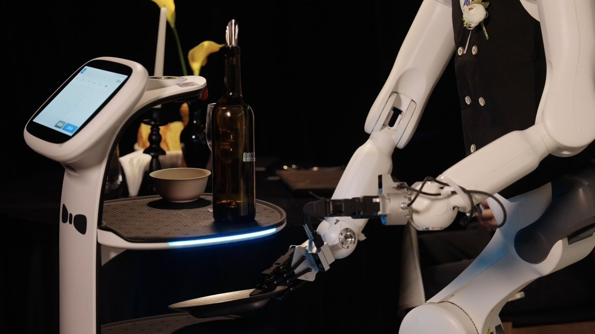
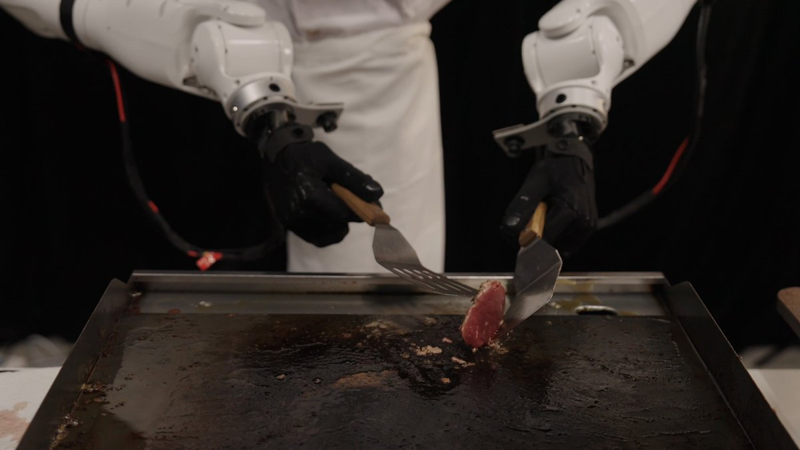
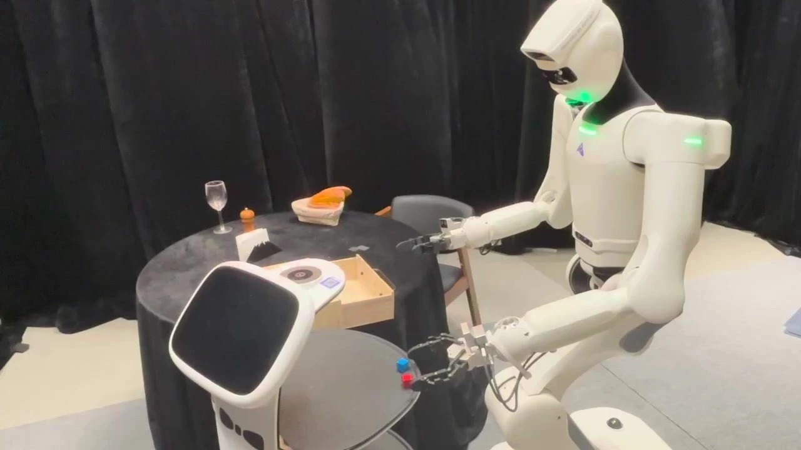
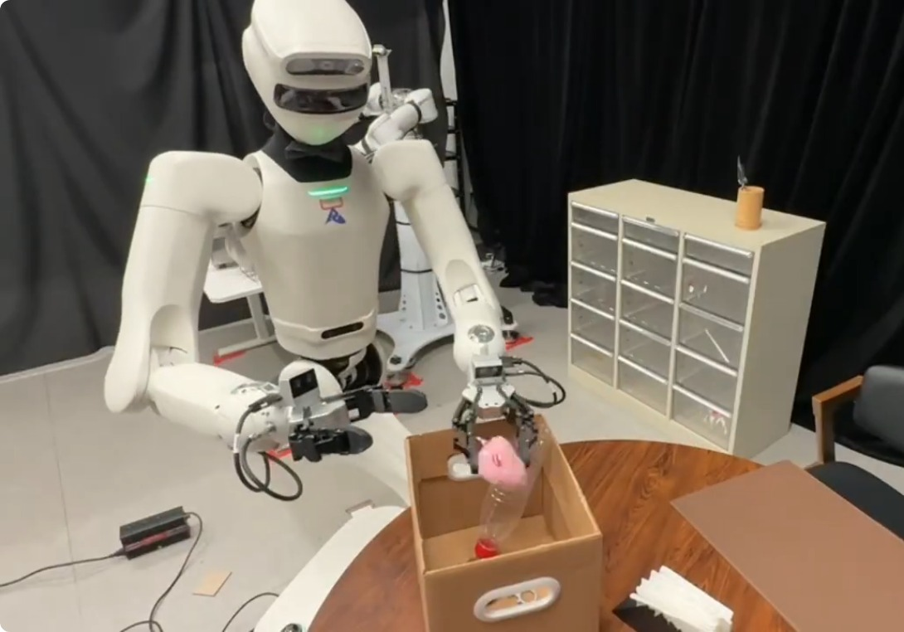

Alibaba DAMO Academy · robot AI model
RynnBrain-VLA
China · 2026
Runs on G1 by Unitree Robotics · S1 by AstribotSource and note: G1 (Unitree Robotics), S1 (Astribot)E alibaba-damo-academy.github.io/RynnBrain/ · Retrieved 13 October 2026
Sources retrieved: 13 October 2026 (A, B, C, E) · 16 October 2026 (D)
- Model type
- Vision-language-action (VLA)Source and note: Model typeB arxiv.org/html/2602.14979 · Retrieved 13 October 2026Note. Developer wording: “vision-language-action modeling (RynnBrain-VLA)”.
- What it controls
- Arms and hands Whole bodySource and note: What it controlsA arxiv.org/html/2607.17977 · Retrieved 13 October 2026Note. The report describes the tested robots as “covering gripper-based whole-body manipulation, dexterous grasping, bimanual coordination, and humanoid whole-body control”. Humanoid whole-body motion on Unitree G1 goes through a separate whole-body controller (SONIC).
- Inputs
- Camera Language Robot stateSource and note: InputsA arxiv.org/html/2607.17977 · Retrieved 13 October 2026Note. RynnBrain 1.1 technical report: “The model takes a packed sequence of language instruction, multi-camera observations, robot state, and noisy action chunks as input, and iteratively denoises to predict an action chunk.”
- Base model
- RynnBrain-2BSource and note: Base modelB arxiv.org/html/2602.14979 · Retrieved 13 October 2026Note. RynnBrain 1.0 report: “We build RynnBrain-VLA upon RynnBrain-2B”. RynnBrain 1.1 report: “RynnBrain-VLA in RynnBrain-1.1 largely follows that in RynnBrain-1.0”.

Specifications
7 of 14 stated 7 not stated
3 fields hidden 4 not-stated fields with a note stay ·
How to read the figuresShow guideClose
- not statedNo source
- yesStated by a source
- 0Reported as zero
- ASource
Select a source marker for source details and notes.
Release1/1 disclosed
Input and output3/4 disclosed
Size and speed0/2 disclosed
Where it runs and what it is built on1/2 disclosed
Openness0/3 disclosed
The developer’s own claims2/2 disclosed
Notes
Alibaba DAMO Academy builds RynnBrain-VLA on its RynnBrain base model to translate fine-grained plans into executable robot actions.
RynnBrain-VLA appears in both the RynnBrain 1.0 and the RynnBrain 1.1 technical reports; the 1.1 report extends it to several robots through one shared action space.
Each robot uses only its own part of the shared action space through a mask.
Sources
One line per source, not per figure: a source has one retrieval date.
- Aarxiv.org/html/2607.17977Retrieved 13 October 2026
- Barxiv.org/html/2602.14979Retrieved 13 October 2026
- Cgithub.com/alibaba-damo-academy/RynnBrainRetrieved 13 October 2026
- Darxiv.org/abs/2602.14979Retrieved 16 October 2026
- Ealibaba-damo-academy.github.io/RynnBrain/Main source. Retrieved 13 October 2026
More models
Same developer

RynnBrainAlibaba DAMO Academy

RynnUnifyAlibaba DAMO Academy

RynnVLA-LatentAlibaba DAMO Academy